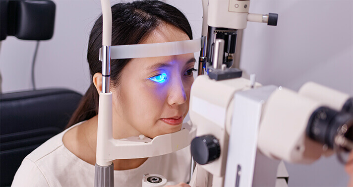
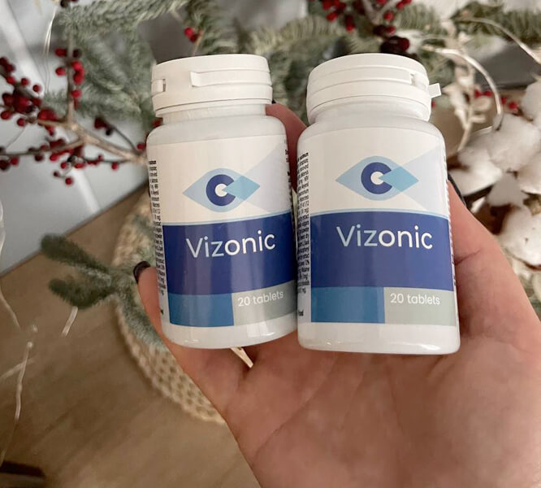
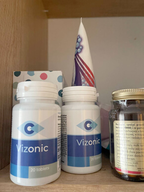
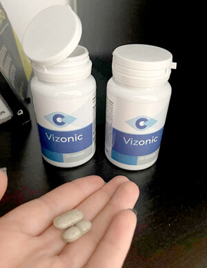
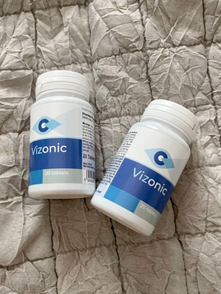

A HÉT HÍREI: MI OKOZZA A GYORS LÁTÁSROMLÁST A LEGTÖBB EMBERNÉL 40 ÉVES KOR UTÁN? KI MENTHETI MEG AZ EMBEREKET A TELJES VAKSÁGTÓL?
Egy elképesztő budapesti diák a legjobb orvosi díjakat kapja a látás helyreállításának új módszerének felfedezéséért, amely bármilyen életkorú betegen alkalmazható.
2019 nyarán valami hihetetlen dolog történt a Szemészek éves kongresszusán Magyarországon. Az teljes gyűlés 10 perces ovációval tapsolt a beszédet mondónak. Ez a személy Ortó Péter volt, egy budapesti orvostanhallgató. Egy egyedülálló készítmény alkalmazását javasolta a látás helyreállítására, amely lehetővé teszi a teljes vakság megelőzését.
Péteré a zseniális ötletet, amelyet az ország legjobb orvoskutatói valósítottak meg. A megvalósításba és a gyógyszer kifejlesztésébe bevonták a Szemészeti Főiskola és más orvosi kutatóintézetek szakértőit. Az új gyógyszerkészítmény eddig remek eredményeket mutat.
Mai riportunkban megpróbáljuk kideríteni, hogyan mentheti meg milliók életét, és hogyan juthatnak hozzá a magyarok HATALMAS kedvezménnyel.
Riporter: "Péter, Ön a világ tíz legokosabb orvostanhallgatója közé tartozik. Mi az oka annak, hogy a látás helyreállításának problémájára összpontosít?"
Nem igazán szeretnék beszélni róla. A motivációm ebben az esetben személyes. Néhány évvel ezelőtt édesanyám látása folyamatosan romlani kezdett. A szemüveg és a kontaktlencse nem segítettek rajta. A látása továbbra is romlott. Szemműtétet terveztek, de egy héttel a műtét előtt kiderült, hogy romló látását a szemlencse és a szemfenék elégtelen vérellátása okozta, ezért a műtétet nem hajtották végre.
Ugyanez a probléma okozta azt, hogy a nagymamám teljesen elvesztette a látását. Ezt követően elkezdtem tanulmányozni a látászavarokkal kapcsolatos témákat. Meglepődve tapasztaltam, hogy a legtöbb gyógyszertárban árusított gyógyszer nem hasznos, sőt káros. Valójában ezek a gyógyszerek csak súlyosbítják az állapotot. Az anyukám pedig minden nap használja őket.
Az elmúlt három évben teljesen beleástam magam ebbe a témába. Igazából a szakdolgozatom írásakor fedeztem fel a látáskezelés új módszerét, amelyről most mindenki beszél. Tudom, hogy ez új. De nem gondoltam volna, hogy ez ekkora érdeklődést vált ki az orvosi és üzleti világban.
Riporter: "Ezt pontosan hogy érted?"
Miután megjelent a módszeremről szóló cikk, azonnal elkezdtem kapni ajánlatokat olyan befektetőktől, akik meg akarták vásárolni az ötletemet. Először egy francia cég keresett meg, és 120 000 eurót ajánlott fel. Az utolsó, aki megkeresett, egy gyógyszertárakat üzemeltető amerikai cég volt. Meg akarják vásárolni az ötletemet 35 millió dollárért. Megváltoztattam a telefonszámomat, és kerültem a közösségi médiát, hiszen rengeteg ajánlatot kaptam, és minden napra jutott valaki, aki megkeresett.
Riporter: "Ha jól tudom, nem adtad el a formulát"
Így van. Kicsit durván hangzik, de nem azért hoztam létre, hogy néhány vagyonos külföldi még gazdagabb legyen. Mert végül is mi történik, ha külföldön adom el a tápszert? Szabadalmaztatják a formulát, és megtiltják másoknak, hogy elkészítsék ezt a gyógyszert. Aztán megemelik az árát. Fiatal vagyok, de nem vagyok hülye. Ebben a helyzetben a hétköznapi emberek egyszerűen nem engedhetik meg maguknak. Az egyik külföldi orvos azt mondta, hogy ennek a formulának legalább 2 000 000 forintba kellene kerülnie. Ez ésszerűtlen. Ki engedheti meg ezt magának 2 millióért?"
Így amikor javaslatot kaptam egy kutatási szakértőtől a helyi piac számára történő kezelés kidolgozására, készséggel egyeztem bele a dologba. A Szemészeti Főiskolával dolgoztam együtt. Szuper élmény volt. A klinikai vizsgálatok már véget értek, és mostantól bárki megvásárolhatja a kezelést.
A projektet Galló Bence professzor, egy magyar magánorvosi központ szemésze segítségével valósították meg. Megkértük, hogy meséljen az új kezelésről.
Riporter: "Miért olyan jelentős Ortó Péter felfedezése? Tényleg korra tekintet nélkül segít teljesen helyreállítani a látást?"
Péter ötlete a szembetegségek, köztük az örökletes betegségek kezelésének új megközelítése volt. A szakértők előtt nem titok, hogy a gyógyszertárban kapható szerek közül mind csak a betegség kezdeti szakaszában segít. Ráadásul a gátlástalan orvosok hozzászoktak ahhoz, hogy csak bizonyos gyógyszereket írnak fel a betegeknek, amelyek csak késleltetik az a visszafordíthatatlant. Amikor pedig a beteg majdnem a teljes vakságig jut, azonnal megműtik.
Számukra ez csak üzlet. Nem igazán akarják meggyógyítani a betegeket.
2000 elején magyar tudósok felfedezték, hogy a látásproblémák 90%-a a szem elégtelen vérellátása miatt következik be. Emiatt a lencse, a sclera és a szaruhártya nem kapja meg a szükséges mennyiségű hasznos tápanyagot. És ha ezt az okot megszüntetjük, a legtöbb esetben elkerülhető a műtét. 
Péter ötlete segít javítani az emberek látószervének vérellátását. Ez segít csökkenteni a látásromlás kockázatát a betegség kezdeti szakaszában. De természetesen nem elég a súlyosabb stádiumú eseteket gyógyítani, amikor a beteg szinte már megvakult. Számos orvos és szakorvos erőfeszítései összpontosulnak arra, hogy a javasolt formula alapján életkortól függetlenül hatékony látásjavító kezelést hozzanak létre.
Riporter: "De nem az az általános vélekedés, hogy lehetetlen a látás műtétmentes helyreállítása, különösen 40 éve felett?"
Semmi értelme az egésznek. Mindez csak a gyógyszergyárak mohóságát mutatja. Régóta bebizonyosodott, hogy bármely testrendszer képes helyreállítani önmagát. Nem kell mást tenni, mint egy kicsit segíteni a gyulladás enyhítésében, a vérellátás javításában, valamint az elhalt sejtek és méreganyagok eltávolításának felgyorsításában.
Riporter: "De hogyan kezelték korábban a szembetegségeket? A gyógyszertárakban számos szemészeti gyógyszert találni."
Pontosan, rengeteg ilyen gyógyszer létezik. De mindegyik azon az elven alapul, amelyet a beszélgetés legelején leírtam. Az említett gyógyszerek csak a tüneteket enyhíthetik – csak ennyit tudnak kezelni. A betegek csak átmeneti enyhülést tapasztalnak. Az ilyen gyógyszerek azonban nagyobb valószínűséggel befolyásolják negatívan a látás állapotát, mintsem helyreállítják azt. Péter tényleg rátapintott. Ha megnézzük a gyógyszertárakban árusított gyógyszerek képleteit, bármelyik szakember azt mondaná rájuk, hogy ezeket csak utolsó lehetőségként használjuk, ha jót akarunk magunknak.
Riporter: "Mi a különbség az említett készítmények és a szóban forgó kezelésed között? Segít az egészséges látás teljes helyreállításában?"
A különbség az, hogy az én kezelésem segít új szövetek növekedésében és a szem vérellátásának helyreállításában. Már egyetlen alkalom után is elegendő több mint 930 000 sejt bekapcsolásához, amelyek közvetlenül részt vesznek a látás helyreállítási folyamatában. És ez minden alkalommal megtörténik, amikor a kezelést használják. Ez a kezelés alapelve.
Like Junjun, we tried to address the issue of restoring sight from a fresh perspective. his treatment is actually more than just a combination of chemical formulas used in many other drugs. It is a unique combination of high concentration plant extracts. This makes it the most effective and safest method of treatment of all existing methods.
A látás szó szerint a kezelést követő 1-2 napon belül javulni kezd. A látás kitisztul, a fókusz javul, a bőrpír és a meleg érzés megszűnik. Ezt követően a sejtek helyreállnak, és a látás még a legsúlyosabb esetekben is normalizálódik. A gyógyszertárakból származó vegyszerekkel ellentétben a nincsenek negatív mellékhatásai a szem ereire. 
Riporter: "De gyógyszertárakban is megvásárolható a kezelésed? És mennyibe kerül?"
Valószínűleg Ön is tudja, hogy miután világossá vált, hogy valójában valami hasznos dolgot csinálunk, a gyógyszergyárak fel akartak lépni velünk szemben. Azt akarják, hogy Péter eladja nekik a készítményt. A gyárak azonban nem akarják gyártani. Ellenkezőleg, a készítmény tömeggyártását akarják visszafogni. A szembetegségek kezelése a gyógyszerpiac egyik legnagyobb területe. Csak az Egyesült Államokban több milliárd dollár értékben adnak el gyógyszereket. Kezelésünk gyökeresen megváltoztatja a piaci helyzetet. Hiszen senki sem akar pénzt költeni az előző generációs gyógyszerekre, vagy lézerrel korrigálni a látását, ha a kúrával egyszer s mindenkorra elfelejtheti a látásproblémákat, életkortól függetlenül.
A gyógyszertári kongolmerátumok a gyógyszeripari cégek partnerei. Szorosan együttműködnek. És persze függenek a gyógyszerek eladásától. Tehát nem engedik bevezetni a kezelésünket, még akkor sem, ha ez az egyetlen hivatalosan javasolt kezelés a szembetegségek kezelésére és a szövődmények, például a teljes vakság megelőzésére.
Riporter: "Hol vásárolhatják meg az emberek a kezelést, ha nem kapható a gyógyszertárakban"
We decided to distribute the medicine ourselves, without the involvement of any pharmacy. We are currently selling Directly to our customers. We do not use any intermediaries such as commercial pharmacies. We discussed the various options and focused on the most effective. If you want to get at a good discount, fill out the form on the supplier's website. Our operators will contact you to answer your questions and confirm the order details. Your order will then be shipped. There is a supplier website where you can place your order at a discount. Almost everyone has Internet access now. Even if a person does not have a computer, they probably still have a smartphone with Internet access. You need to hurry before the offer ends.
If you order in advance, you will get with 50% DISCOUNT. This promotional campaign is designed to arouse people's interest in the treatment. We hope to use the "word of mouth" effect because we believe people will start recommending it to their friends and family.
Riporter: "De mi a normál ár?"
A gyártási költség körülbelül 84 ezer forint csomagonként. Jelenleg azonban nagy kedvezményekkel kínáljuk a terméket, így bárki számára megfizethető. A kedvezmény akár 50% is lehet. Szerencsére a gyógyszergyártók megértik annak fontosságát, hogy a gyógyszert az ország teljes lakossága számára elérhetővé váljon, ne csak néhány kiválasztott számára. Megígérjük, hogy nem értékesítjük külföldön a készítményt, és magát a gyógyszert sem exportáljuk, hanem csak Magyarországon adjuk el.
Utolsó frissítés: Saját régiójában és városában vásárolhatja meg a , így a kedvezmény mértéke akár .
Előzetes rendelés esetén 50% KEDVEZMÉNNYEL veheti meg a .
VIGYÁZAT: Óvakodjunk a hamisítványoktól
A megvásárlása 50%
KEDVEZMÉNNYEL csak a hivatalos weboldalon lehetséges. Adja le rendelését online.
Én megkaptam ezt a különleges kezelést. A kezelés ötödik napjára már jobban láttam, és nem volt többé homályos a látásom. 15 év után először nem hordom a szemüvegem! Jó érzés tisztán látni!
Kedvezményesen rendeltem meg az anyukámnak. Tegnap érkezett meg. A postán kellett átvennem. Sokkal egyszerűbb, mint elmenni a személszhez. Már el is kezdte használni.
Ezek a gyerekek olyan okosak! Sok sikert a projekthez!
Olvastam erről a kezelésről az újságban. Egy ismert orvos írt róla...
10 napja kaptam meg. Jövő hónapban meg kellene műttetnem magam. Soha nem gondoltam volna, hogy ez fog segíteni rajtam. Glaukómám van. Amikor tegnap elmentem a szemészhez, nem hitte el, amit lát: a látásom helyreállt. Megkérdezte, milyen gyógyszert használok, és elmondtam neki, hogy ezt a . Azt mondta, még soha nem hallott ilyesmiről, mert ha hallott volna, akkor felírta volna nekem, ahelyett, hogy műtétet javasolt volna! Én azonban nem hittem neki. Korábban rendeltem meg a terméket mert le volt árazva, és féltem hogy megvakulok a műtét után..
Anyukámnak és apukámnak rendeltem meg, mert nem akartam lemaradni a kedvezményről. Jelenleg mindkettejüknél folyamatban van a kezelés, és napról napra jobban érzik magukat. Otthon már nem hordanak szemüveget, ami nagy előrelépés.
Kedvezményes áron tudtam megrendelni! Remélem, hogy holnap elküldik.
Megrendeltem, alig várom, hogy megérkezzen!
Nagyon kellemetlen, ahogy a magánklinikákon kezelnek. Sok idő telt el, mióta utoljára ott jártam. Ott egyszerűe elpusztítanak. Nagyon hálás vagyok a lehetőségért, hogy ilyen hatalmas kedvezménnyel szerezhettem meg a .
Olvasom ezt a sok értékelést, és rájöttem, hogy nekem is kell :) Meg is rendelem most.
Elképesztő, amit ezek az emberek tesznek. Köszönet az erőfeszítéseikért, hogy minden ember számára elérhetővé teszik.
Nagyon furcsa! Múlt héten még szürkehályogom volt, de most már nyoma sincs. A látásom még nem tökéletesen gyógyult meg, de még nem is végeztem a kezeléssel.
